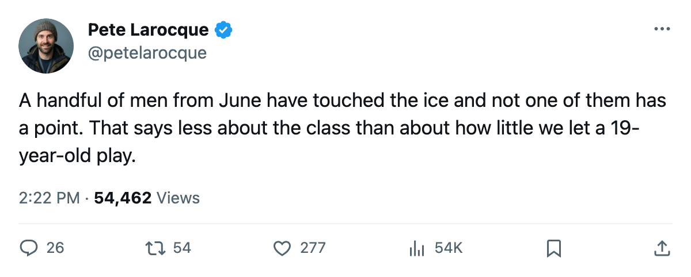
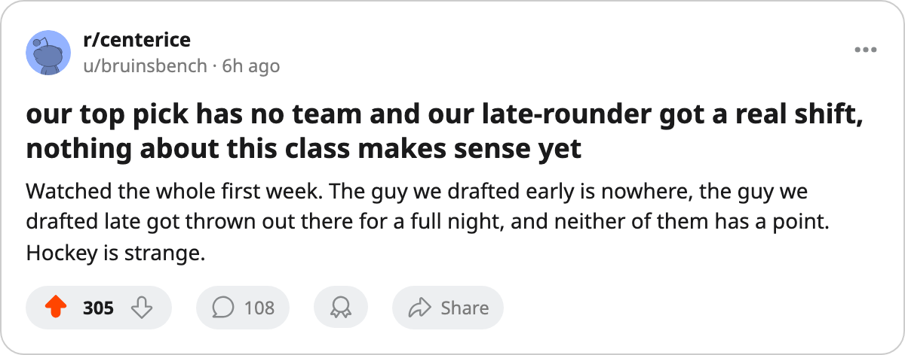

Four Men From June Have Played. The Class Has 0 Points.
Twelve days into the season, the 2005 draft has produced four games-played men, no points, and six picks nobody has signed.
 Pete LarocqueScouting editor · The Prospect File
Pete LarocqueScouting editor · The Prospect File
Four players from the 2005 draft have dressed for a league game, and the record shows 0 goals, 0 assists and 0 points between them. The class is 12 days old.
Of the men taken in June, 54 sit on a roster and have not dressed, and six have no club at all. The Bureau graded the class through the summer. The ice has barely seen it.
| player | pick | club | gp | points | mpg |
|---|---|---|---|---|---|
| Tim Gardener75 | 2005 #5 (R1) |  Toronto Maple Leafs Toronto Maple Leafs | 4 | 0 | 5.3 |
| Jussi Nurminen69 | 2005 #102 (R4) |  New York Rangers New York Rangers | 3 | 0 | 11.0 |
| Josh Sim75 | 2005 #119 (R4) |  New Jersey Devils New Jersey Devils | 1 | 0 | 9.0 |
| Jussi Vertala74 | 2005 #145 (R5) |  Washington Capitals Washington Capitals | 1 | 0 | 31.0 |
The four who have dressed
Gardener has played the most of any man from June: 4 games for the Maple Leafs, 5.3 minutes a night, 0 points. He went 2005 #5 (R1) and is the only first-round pick in the class who has taken a shift.
Nurminen has 3 games for the Rangers at 11.0 minutes a night. Sim dressed once for the Devils and played 9.0 minutes. Vertala dressed once for the Capitals and took 31.0 minutes of it.
A fifth-round pick getting 31.0 minutes in his only appearance is the oddest line on the sheet. The Junior Bureau graded Vertala at 88 potential in June, and Washington has used him for one night. The Bureau's Book has him at 73 overall against that 88.
Fifty-four on a roster, none on the ice
The men who have not dressed include Petri Makiaho66, whose 99 potential matches the best grade the Junior Bureau gave anyone in June, and Boris Bunka71, 2005 #18 (R1) to  Detroit Red Wings at 70 overall. Of the men with a club, 54 have 0 games. The Bureau's current grades for them run from the 80s down into the 50s, and none of it has been tested.
Detroit Red Wings at 70 overall. Of the men with a club, 54 have 0 games. The Bureau's current grades for them run from the 80s down into the 50s, and none of it has been tested.
Six men from June have no club
Petr Beier went 2005 #8 (R1) and carries a 99 potential grade from the Junior Bureau. He is unsigned. Twelve days into the season he was drafted into, the best-graded player in the class has no sweater.
Marcel Smrek went 2005 #123 (R5) with 85 potential and no club. Marcel Ballo went 2005 #3 (R1) at 62. Leo Glebov (2005 #38, R2) carries 74, Marcus Liv (2005 #84, R3) carries 69, Martin Hobson (2005 #53, R2) carries 62.
The current grade points one way, the development grade the other
Leo Atonovich62 went 2005 #13 (R1) to  Atlanta Thrashers with 96 potential and a current grade of 62, and he has not dressed. Gardener, the one first-rounder who plays, grades 77 overall against 98 potential. Vertala, who took the 31.0-minute night, grades 73 against 88.
Atlanta Thrashers with 96 potential and a current grade of 62, and he has not dressed. Gardener, the one first-rounder who plays, grades 77 overall against 98 potential. Vertala, who took the 31.0-minute night, grades 73 against 88.
The Bureau's two numbers are pulling in opposite directions across the whole round, and the men it likes today are the ones sitting. Twelve days is a short window, and most of this class is 19 and 20. The record today is four players, 0 points, and six picks nobody has called.

